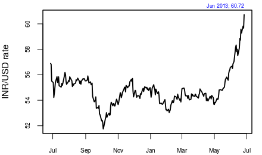
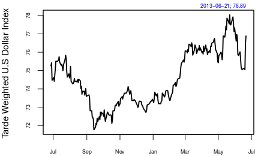

How to cap the CAD
Financial Express, 28th June 2013
The deficit in India's balance of payments in 2012-13 remained just below 5% of GDP. At 4.8% of GDP, though extremely high by historical standards, it brought a sigh of relief to those watching the external sector. Today, the pressure on the rupee to depreciate is largely a phenomenon caused by an appreciation of the dollar against its major trading partner currencies. If the balance of payments had turned out to be even worse than 5%, which has pretty much already been factored into currency markets, there could have been an additional worry about the country-specific pressure on the rupee that might be around the corner.
Indeed, the good news is that in the January-March 2013 quarter the balance of payments situation for India improved. In the third quarter of 2012-13, the balance of payments deficit had risen to 6.7% of GDP. In the fourth quarter it fell to 3.6%. Again, though this appears very large by historical standards, the improvement is welcome.
  The improvement came about primarily because of higher exports, though there was also a small decline in imports. The recent rupee depreciation is good news, as it would help to keep exports competitive. Most other currencies have depreciated and if the rupee had not depreciated then this increase in exports could be threatened. However, service exports are down and hopefully a weaker rupee would help.
The balance of payments statistics shows that the net invisibles have recorded a sharp decline. In the corresponding quarter a year ago they grew at 27.5%. In Q4 of 2012-13 they declined by 7.7%. This behaviour is consistent with the increase in import of gold. Low real interest rates make it unattractive for households to send money to India in the same way that it encourages them to buy gold. When growth crashes and investment opportunities within a country are weak, the attractiveness of the domestic currency declines. This, along with a high inflation rate that has persisted for many years now, is responsible for weakening the attractiveness of the rupee.
The consolidation of the central fisc would also have played a role in keeping the current account deficit (CAD) under control. After P Chidambaram took over as finance minister there has been a drive to control expenditure. This drive has resulted in fiscal deficit below targeted, and in controlling aggregate demand in the economy. This would help in preventing a spillover of demand.
While the news that the CAD is below 5% is good, it still remains a matter of concern. India is financing the CAD by attracting foreign portfolio investment. With the withdrawal of the quantitative easing (QE) programme by the US Fed, these flows may recede. The SEBI board has moved forward to implement the simplification of the foreign institutional investor framework that was proposed by the UK Sinha committee report. This is a positive development. However, the task is not over yet.
First, there are problems in the know-your-client norms, which are proposed to be different for different categories, and it remains to be seen if individuals are easily able to access Indian equity markets as the framework aims to do. Second, the debt market still remains riddled with bad design and quantitative restrictions. Unless these are removed, we are actually blocking off one channel for which India can be an attractive investment destination-rupee-denominated sovereign debt. Third, India will need to move to residence-based taxation if it wants to attract flows as effortlessly as the OECD countries do. Every few months an enthusiastic tax officer or a minister of state wanting to increase revenue collection starts talking about scrapping the Mauritius treaty. This creates uncertainty in the market. This problem cannot be solved by signing a new treaty as that too could come under such cloud; it can be solved only by the country moving to a tax regime where foreigners are not given such tax uncertainly. The move to reduce the withholding tax on foreign debt to 5% is a good one. But the next move will have to be to remove it altogether.
Is the large CAD a temporary phenomenon, or is it here to stay? In 2011-12, the deficit was 4.2% of GDP. In 2013-14, it is 4.8% of GDP. The coming year could do well if exports pick up further. So, for example, if the US economy does well then it should reflect on the demand for exports from India. In that case, our CAD could be lower. However, we should not merely depend on this. Reform in fuel and fertiliser price policies and fiscal consolidation will help control demand. On the other hand, better growth and investment opportunities and lower inflation will make India a more attractive investment destination. At the same time, India needs to get rid of the maze of capital controls that it has created so that the country becomes a more attractive destination for foreign capital.
Back up to Ila Patnaik's media page
Back up to Ila Patnaik's home page